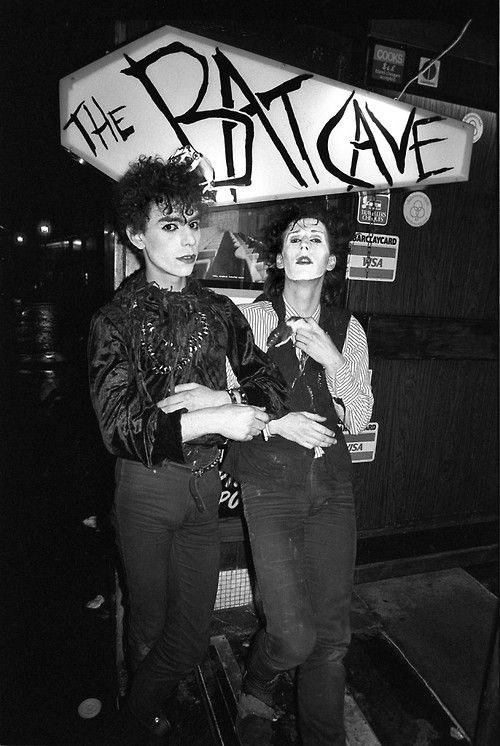

The Music of the Goth Subculture:
Now that we’ve briefly covered the history of the subculture, we will dive into the music.
Goth music originated from a variety of influences and has grown into many different genres since its birth.
Goth music evolved from the punk and post-punk scene of the 1970s. In the 1980s, nightclubs in Britain like the Batcave in London and the F-Club in Leeds started featuring dark, melancholic, goth bands.
Bands like Siouxsie and the Banshees, The Cure, Joy Division, Echo and the Bunnymen, and Bauhaus were classic goth bands and have a huge influence on what goth music is today.